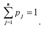
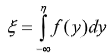
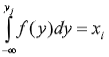

2.6 Моделювання випадкових величин
|
Моделювання дискретних випадкових величин |

|
|
Нехай η – випадкова величина, яка може набувати значень
y1, y2, ...,
yn з ймовірністю p1,
p2, ..., pn, де

Визначення її значень зводиться до моделювання групи несумісних подій
A1, A2, ...,
An. Передбачається, що подія Aj полягає в тому, що випадкова величина η набуває значення yj; j = 1, n. Методи моделювання неперервних випадкових величин: – прямого перетворення (зворотної функції); – кускової апроксимації функції щільності; – відсіювання (виключення); – моделювання умов граничних теорем теорії ймовірностей. |
Метод прямого перетворення |
|
|
Заснований на теоремі: якщо випадкова величина η має щільність розподілу f(y), то
розподіл випадкової величини

є рівномірним в інтервалі числової осі (0,1). Отже, щоб отримати чергове число ysub>j, необхідно розв’язати відносно верхньої межі інтегрування рівняння

|